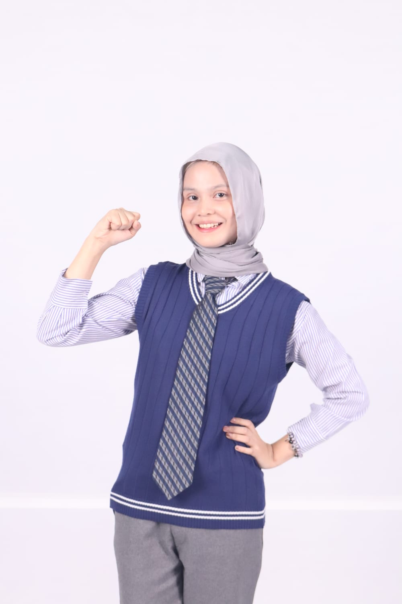

Information Technology student at Telkom University Jakarta with experience in Web and Mobile Application Development. Skilled in building responsive web applications and mobile solutions, with hands-on experience from academic projects, research activities, and professional internships. Eager to contribute to innovative technology solutions and continuously expand software development expertise.
Nama: Zahra Nur Fauziah
Status: Mahasiswa S1 Teknologi Informasi
Universitas: Telkom University Jakarta
Domisili: Bekasi, Indonesia
Email: fauziahzahra212@gmail.com
No. Telepon: +62 822-4648-3724
LinkedIn: LinkedIn Profile
GitHub: github.com/ziadev-10
Informatics Engineering Student Association (HMIT)
Telkom University Jakarta
Telkom University Jakarta
PT Bank Mandiri (Persero) Tbk.
PT Integra Padma Mandiri
B.Sc. in Information Technology
Telkom University Jakarta
Al Arabi Integrated Islamic Senior High School
Science Program
Untuk melihat portfolio dan project yang telah dikerjakan, silakan mengunjungi: